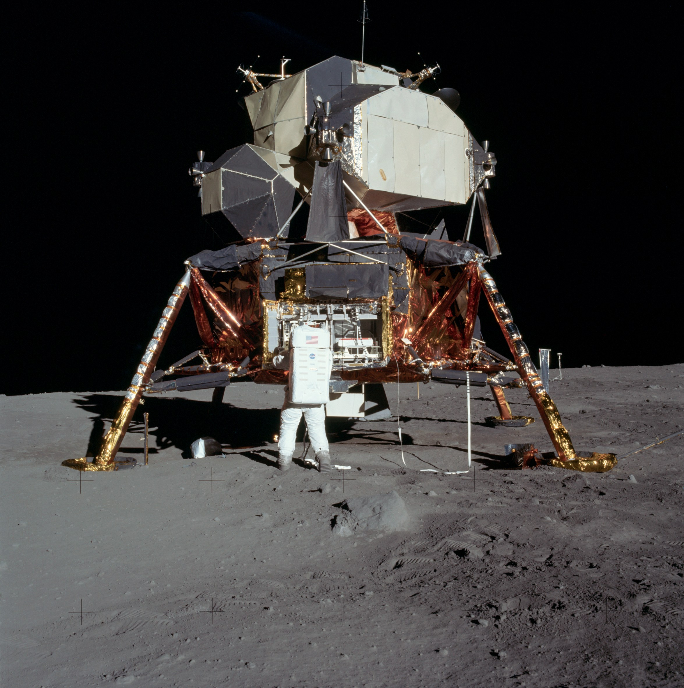
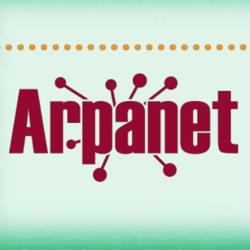

| 1957 |
ARPA |
Se cuenta con el registro de la Agencia de investigaciones Avanzadas (ARPA). |
|
| 1961 |
LEONARD KLEINROCK |
Publicó desde el MIT el primer documento que redactó la teoría de conmutación de paquetes. |
|
| 1967 |
ALUNIZAJE |
El hombre llega por primera vez a la luna, lo cual marca el inicio de las comunidades globales. |
 |
| 1969 |
ARPANET |
Se estableció por primera vez la primer conexión de computadoras, conocida como ARPANET entre tres universidades en California y una en Utah. |
 |
| 1983 |
CAMBIO |
ARPANET cambió el protocolo NCP por TCP/IP |
|
| 1989 |
OSI |
Se integran los protocolos OSI en la arquitectura de internet, facilitando el uso de distintos protocolos de Internet. |
|
| 1990 |
ARPANET ELIMINADO |
Se desmantela ARPANET y de él aparecen:
- MILNET: Carácter militar.
- INTERNET: Accesible para todos.
|
|
| 1991 |
HTML Y WWW |
Tim Berners Lee, crea la Word Wide Web, mejor conocida como WWW.
|
|
| 1991 |
Se propuso en ese mismo año un nuevo sistema de hipertexto para compartir documentos.
(HyperText Markup Language) Lenguaje de marcas de hipertexto. |
 |
| 1991 2016 |
WEB 1.0 |
Fundación de las empresas:
- Amazon.
- Google.
|
  |
| WEB 2.0 |
Fundación de las empresas:
- Facebook.
- Ajax.
- Amazon EC2.
|
 |
| WEB 3.0 |
Liberación del HTML 5 |
 |
| WEB 4.0 |
Se centra en ofrecer un comportamiento más inteligente y más predictivo, de modo que podamos, con sólo realizar una afirmación o
una llamada, poner en marcha un conjunto de acciones que tendrán como resultando aquello que pedimos, deseamos o decimos. |
 |